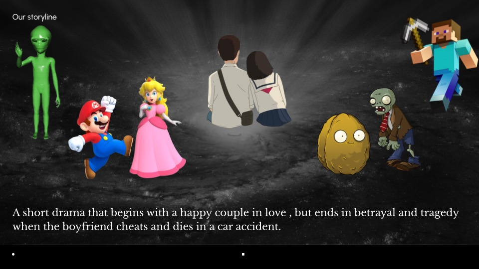
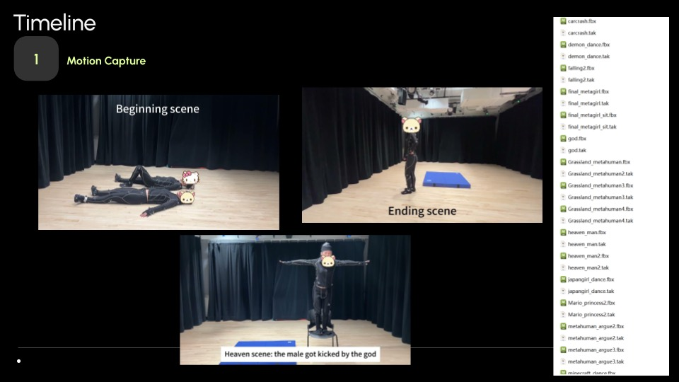
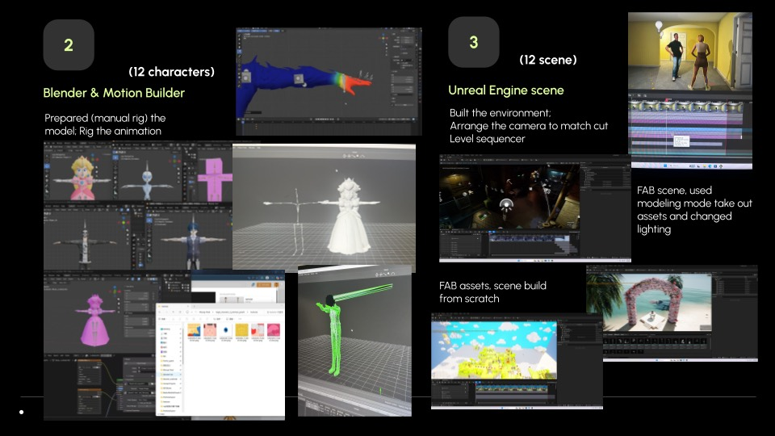
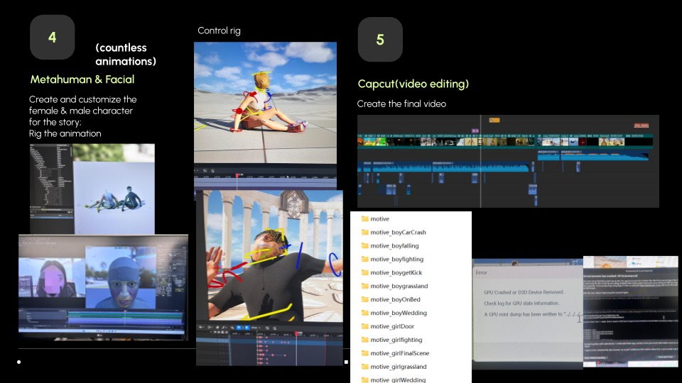

[00] About
I'm a product designer studying Integrated Design & Media at NYU Tandon. I love making things, especially where technology meets art: an interface, an interactive installation, or an animated film.
- Focus
- UX research, interaction design, prototyping
- Education
- B.S. Integrated Design & Media, NYU Tandon, May 2028
- Previously
- Art + Technology, Pratt Institute
- Experience
- Junior UX Designer Intern, Xtraspots
- Toolkit
- Figma, Unreal Engine, p5.js, Arduino, Adobe CC
- Languages
- English, Mandarin Chinese
Motion Capture · NYU Tandon · Spring 2026
01 Broken Promises
A short animated drama that begins with a couple in love and ends in betrayal, a car crash, and a cemetery.
Three of us captured every performance in the mocap studio, rigged twelve characters, and staged twelve scenes in Unreal Engine, cutting between them with match cuts.
My part: body and facial capture actor, rigging, retargeting mocap onto most of the cast, and the Alien Marriage, Heaven, Hell, and Cemetery scenes.
p. 02
Watch the film ↗The couple's story jumps through game and movie worlds: Minecraft, Plants vs. Zombies, an alien wedding, Heaven and Hell.
p. 03Broken Promises · Process
From suit to screen
- Motion capturePerformed body and facial capture; recorded every scene in the studio.
- Blender & MotionBuilderManually rigged 12 characters and attached the mocap data.
- Unreal Engine scenesBuilt environments from FAB assets, re-lit them, and set cameras in Level Sequencer.
- MetaHuman & facialCreated the two leads and animated them with Control Rig.
- EditCut the final film in CapCut.



Art and Technology · Pratt · Fall 2025
02 Let You Be You
An interactive LED miniature garden that only shines when the room goes dark.
In daylight the fake grass and flowers sit neatly in place and every LED stays off: a polished surface with no life in it. When a photoresistor senses the dark, LEDs of different colors light up inside the flowers. Each one stands for an emotion, a trait, or a small weirdness we usually hide.
The idea: you are more beautiful when you are being yourself.
p. 06Try it: this is a sketch of how the piece behaves. The real garden uses an Arduino reading a photoresistor; below a light threshold, it turns the LEDs on.
p. 07Creative Coding · Pratt · Fall 2025
03 Creative Coding Reel
A semester of sketches written in p5.js, collected into one reel.
Generative visuals, WebGL 3D, data visualization, and pieces that follow a body or a hand through the webcam with ml5.js BodyPose and HandPose.
Watch the reel ↗ p. 08Move your cursor or finger over the square. The dots follow it, the way my HandPose sketches follow a hand.
p. 09Off the screen
I have been dancing for most of my life.
Hip hop and K-pop crews, school dance academies, and stages from Queens to Hunan. Dance is also where my work is going: I want to build tools that make rehearsal and performance work better.
Also: ten years of piano.
p. 10Selected results
- MegaCrew FinalistHip Hop International (HHI) USA Championship, Los Angeles
- 1st PlaceDance Smash, Hunan, China
- Gold MedalSpotlight Teenage, Hunan, China
- 1st PlaceBreakout Dance Competition, Sicklerville, NJ
- 2nd Place and $3,000 prizeKBTV K-Pop Dance Contest, Ridgefield Park, NJ
- 1st PlaceGlobal Talent Show, Lincoln Center, New York
[*] Résumé
Say hello
I'm looking for internships in UX and product design, creative technology, and interactive media.
- School email
- zs2938@nyu.edu
- Personal email
- zizi.zixuan.shao@gmail.com
- Based in
- Brooklyn, New York
thanks for reading!
p. 13